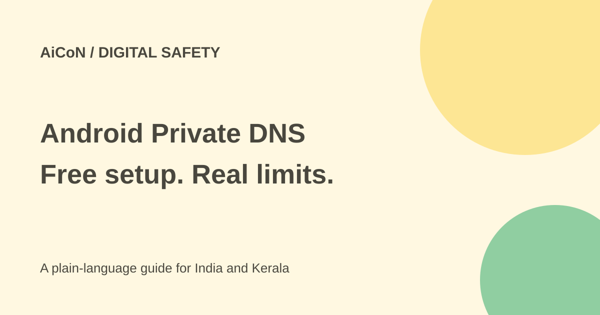

AdGuard Private DNS on Android: free setup and limits
Android Private DNS can use AdGuard's free public server to block many advertising and tracking domains. No app or account is needed for this manual route. It cannot remove every ad and is not a VPN.

What does DNS do?
DNS finds the network address for a domain name. A blocking DNS server can refuse to resolve known advertising or tracking domains. That stops some requests before the ad loads, but it cannot read every part of a page and remove individual elements.
Android 9 and later have built-in support for encrypted DNS using DNS-over-TLS. Private DNS is the Android setting name. AdGuard also sells a separately named private DNS product with account controls. You do not need that paid product merely to enter its public hostname.
How to set it up
- Check that your phone runs Android 9 or later. Exact settings labels vary by maker.
- Open Settings, then Network & Internet or Wi-Fi & Internet. Look for Private DNS, sometimes under Advanced.
- Select Private DNS provider hostname.
- Enter dns.adguard-dns.com. Enter the hostname only, not https:// or a website path.
- Tap Save and open a few trusted websites and apps.
- Check both Wi-Fi and mobile data. If a service fails, return to the same setting and select Automatic.
- Keep a note of the change so another person troubleshooting the phone knows which DNS server is being used.
No APK, download image or third-party installer is required for these steps. Use the official hostname instead of downloading a file that claims to provide the setting.
Choose the right public server
The default hostname blocks ads and trackers. family.adguard-dns.com adds adult-content filtering and Safe Search or Safe Mode where possible. unfiltered.adguard-dns.com does not block DNS requests.
Family filtering is not a complete child-safety system. A different app, network setting or resolver can bypass DNS-based controls. Keep supervision and age-appropriate device settings separate from this one change.
Why YouTube ads still appear
AdGuard explains that DNS-level blockers cannot separate an ad from wanted content when both share a domain. Its FAQ gives YouTube and Twitch ads, plus sponsored social posts, as examples. Blocking the whole domain would also block the content.
DNS filtering cannot hide every blank ad frame. Some apps choose a different DNS server, and some websites can break when a supporting domain is blocked. It is therefore a useful extra layer, not a promise of an ad-free phone.
Free or paid?
The official public servers are free. The manual Android route needs neither a paid account nor an extra app. AdGuard's app and account-based private DNS services are separate offerings with different features and prices. Do not accept an upgrade thinking it is required for this setting.
No rupee charge is needed for the public-hostname setup described here. Your normal internet plan still applies.
Privacy and troubleshooting
Encrypted DNS protects the lookup connection, not every part of your browsing. It does not hide your IP address from websites or make a login anonymous. You are choosing a resolver to receive domain lookups; consider that trust choice before changing a work or school device.
If browsing stops, first return Private DNS to Automatic. Try again on a different connection and check the official service information. Do not disable other security controls or install an unknown certificate as a fix. Captive Wi-Fi sign-in pages and managed networks may need their normal DNS setup.
What changed since the original post?
The three public hostnames and free manual route remain supported. This guide adds the distinction between Android's setting and AdGuard's account product, the first-party-ad limit and the undo steps. No phone setting was changed or ad-blocking test performed for this review.
Frequently asked questions
Will it remove all ads?
No. Same-domain ads and some app traffic get through.
Is an app required?
No, not for the built-in Android public-hostname route.
How do I undo it?
Return to Private DNS and select Automatic.
Sources: Official public DNS setup · How DNS blocking works and its limits · Official DNS-level blocking FAQ. Checked 7 October 2026.